05.28.2011 10:49
A day at sea
Yesterday was my first day (really
1/2 day) at sea in a very long time. We left from the UNH pier on
the R/V Coastal Surveyor.
We had to pause for rush hour as a tall ship came through escorted by two tugs (one from the Navy ship yard) with fire hoses going. There were tons of other ships following along.
The fog got really thick after a while, so we had to head up river to be safe.
Here is the aquisition setup...
We used the EdgeTech software to log in the JSF format
Here is the current setup of the Coastal Surveyor's console with Coastal Explorer. It beeps and highlights military vessels in the ship list when it sees them via AIS. Ben showed me how the software locks up forwarding NMEA to other serial ports when certain dialog boxes are up. Definitely file that as a bug for the otherwise excellent ENC software.
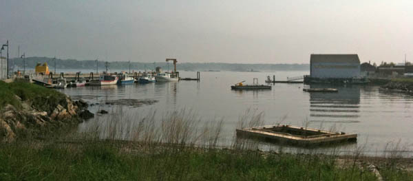
We had to pause for rush hour as a tall ship came through escorted by two tugs (one from the Navy ship yard) with fire hoses going. There were tons of other ships following along.
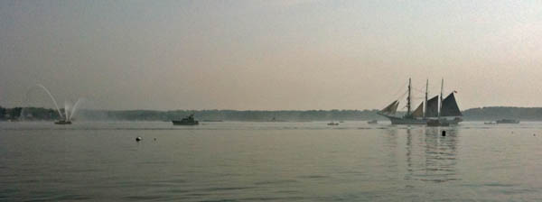
The fog got really thick after a while, so we had to head up river to be safe.
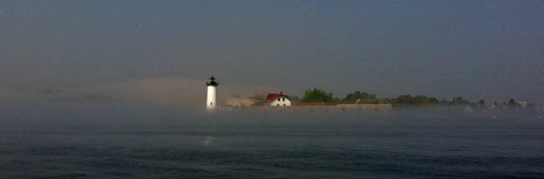
Here is the aquisition setup...
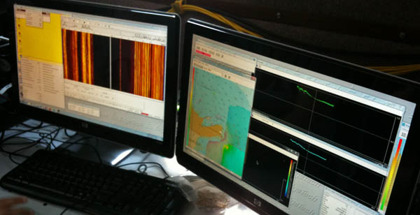
We used the EdgeTech software to log in the JSF format
Here is the current setup of the Coastal Surveyor's console with Coastal Explorer. It beeps and highlights military vessels in the ship list when it sees them via AIS. Ben showed me how the software locks up forwarding NMEA to other serial ports when certain dialog boxes are up. Definitely file that as a bug for the otherwise excellent ENC software.
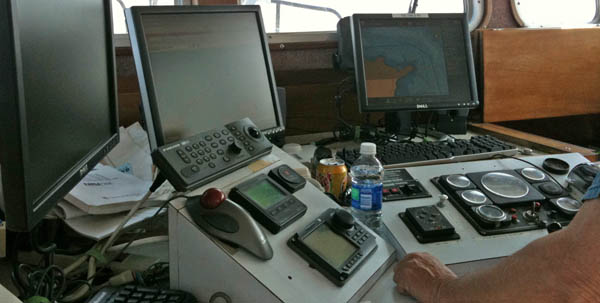
05.23.2011 13:13
AIS for aircraft and history analysis
Today, Slashdot posted
Google Founders' Jets Caught On WSJ's Radar, which links to the
WSJ's Air traffic database. This is much like the analysis that
I've been working on for AIS, but aircraft have much less freedom
of movement than ships. See also
WSJ(5/21) For The Highest Fliers, New Scrutiny in Morningstar
with more of the article.
See also: Automatic dependent surveillance-broadcast (ADS-B)
Planes have been trackable for a lot longer than ships, but I've spent much less time looking at plane, ship, and car/truck tracking technologies. And the Amateur Radio crowd has had the Automatic Packet Reporting System (APRS) for a long time.
See also: Automatic dependent surveillance-broadcast (ADS-B)
Planes have been trackable for a lot longer than ships, but I've spent much less time looking at plane, ship, and car/truck tracking technologies. And the Amateur Radio crowd has had the Automatic Packet Reporting System (APRS) for a long time.
05.17.2011 11:32
UNH Seismometer Install
On May 3rd and 4th, Mike Hagerty, Margaret,
Monica, and I setup the new UNH Seismometer. Monica has written up
the seismometer:
UNH now has a seismometer!. I took a few pictures during the
install process:
The initial configuration is done with a Palm Pilot. I haven't see one of those in quite a while. If it works, don't change it.
We performed a jump test to see if the seismometer was recording. This is a first indication that the sensor is well coupled to the building (which is not a desirable trait). But we were sure that the sensor was working
Is is a day of data plotted up. First the broadband signal:
The high frequency spectrum is where we look for local quakes. It's seeing building and train noise.
The low frequency plot is detecting teleseisms, but there is also other stuff on there.
This setup is great for us to get started learning about the system. It is located in the basement of James Hall, so we can access it any time. However, in the long term, this device needs to find a quieter home with good coupling to bedrock.
During the setup, most of my contribution was on the network side of things. The device is linux based and has a pretty aggressive firewall on it. It only talks on a very local subnet and to the Boston College data logging system. That's great for security, but we can't yet get at the data in way that we could monitor it with nagios.
The device uses the RTP protocol, which is an interesting UDP reliable transport mechanism. The transmit mechanism is very similar to how I did image sending from the Nomad Rover in the Atacama desert over a "long-skinny pipe". I still kick myself for not writing up that design back in 1997. The basic idea is to strongly decouple the acknowledgments of data and to have a very light connection protocol that assumes that connections go up and down. Data transmission is a continuous process between periods of no connectivity. There is a big buffer that the device keeps working on sending when it can.
The initial configuration is done with a Palm Pilot. I haven't see one of those in quite a while. If it works, don't change it.
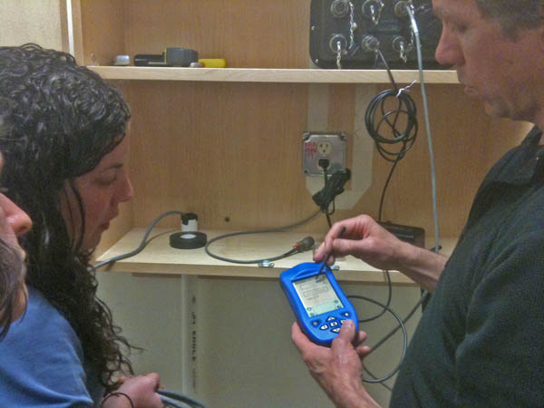
We performed a jump test to see if the seismometer was recording. This is a first indication that the sensor is well coupled to the building (which is not a desirable trait). But we were sure that the sensor was working
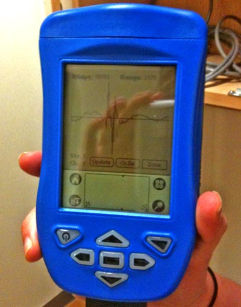
Is is a day of data plotted up. First the broadband signal:
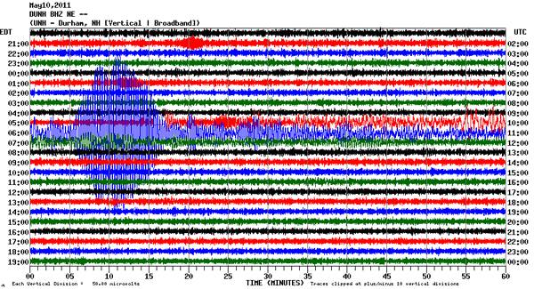
The high frequency spectrum is where we look for local quakes. It's seeing building and train noise.
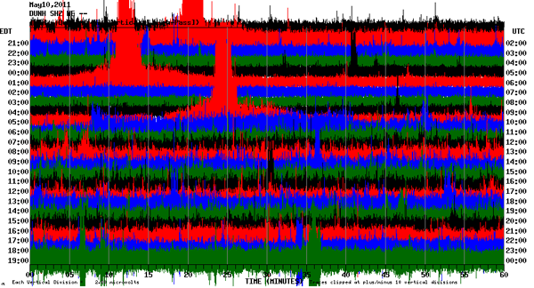
The low frequency plot is detecting teleseisms, but there is also other stuff on there.
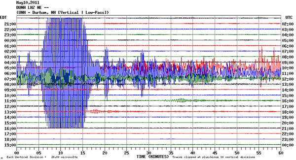
This setup is great for us to get started learning about the system. It is located in the basement of James Hall, so we can access it any time. However, in the long term, this device needs to find a quieter home with good coupling to bedrock.
During the setup, most of my contribution was on the network side of things. The device is linux based and has a pretty aggressive firewall on it. It only talks on a very local subnet and to the Boston College data logging system. That's great for security, but we can't yet get at the data in way that we could monitor it with nagios.
The device uses the RTP protocol, which is an interesting UDP reliable transport mechanism. The transmit mechanism is very similar to how I did image sending from the Nomad Rover in the Atacama desert over a "long-skinny pipe". I still kick myself for not writing up that design back in 1997. The basic idea is to strongly decouple the acknowledgments of data and to have a very light connection protocol that assumes that connections go up and down. Data transmission is a continuous process between periods of no connectivity. There is a big buffer that the device keeps working on sending when it can.
05.16.2011 12:07
Exemplary cruise and descriptive reports?
I am on the hunt for great cruise
reports and hydrographic survey Descriptive Reports (DR). I'm
asking a few people directly for their opinions, but here I'm
asking anyone who is willing to share their take on examples of
what makes a great report.
For example, Jim Gardner shared his CRUISE KM1009 May 17, to June 16, 2010.
Please comment here: Examples of good cruise reports and descriptive reports (DR)?
For example, Jim Gardner shared his CRUISE KM1009 May 17, to June 16, 2010.
Please comment here: Examples of good cruise reports and descriptive reports (DR)?
05.16.2011 07:16
Right whale protection
The New England Aquarium and Iriving
Oil:
Found via Christin Khan: {Video} North Atlantic Right Whale Protection Program
Found via Christin Khan: {Video} North Atlantic Right Whale Protection Program
05.12.2011 18:36
GEBCO project video
General Bathymetric Chart of The
Oceans (GEBCO) project at CCOM/JHC:
05.10.2011 10:38
ERMA DHS medal part 2
There is now a UNH press release out
on the ERMA being a finalist for the Homeland Security Medal:
UNH Developers Share Honors for Oil Spill Response Tool
UNH Developers Share Honors for Oil Spill Response Tool
... ERMA was started more than three years ago as a pilot for New Hampshire's Great Bay by several UNH developers, including Rob Braswell of the Complex Systems Research Center and Kurt Schwehr of the Center for Coastal and Ocean Mapping. It has since evolved into a Web-based GIS platform that incorporates data from the various agencies that work together to tackle response to oil spills. Round-the-clock work by UNH's RCI, in particular technical lead Robert St. Lawrence and information technologist Philip Collins, redeployed the Gulf of Mexico version of ERMA in several hours, within days after the Deepwater Horizon spill began. ERMA integrated the latest data on the oil spill's trajectory, fishery closure areas, wildlife and place-based Gulf Coast resources into one customizable interactive map, providing officials with continuous information on the worst oil spill in the nation's history and helping shape critical decisions on how they responded to the environmental disaster. ...
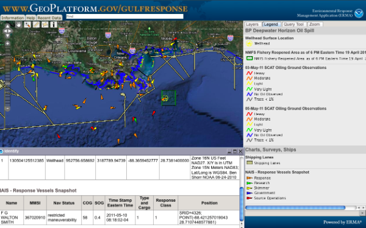
05.06.2011 15:40
Mars lander geophysics mission
Thanks to Zareh for point out this
press release:
NASA Selects Investigations For Future Key Planetary Mission. I
am very partial to the GEMS mission:
Geophysical Monitoring Station (GEMS): A Discovery-Class Mission to Explore the Interior of Mars
Geophysical Monitoring Station (GEMS): A Discovery-Class Mission to Explore the Interior of Mars
The GEophysical Monitoring Station (GEMS) is a proposed Discovery-class mission designed to fill a longstanding gap in the scientific exploration of the solar system by performing, for the first time, an in-situ investigation of the interior of Mars. This mission would provide unique and critical information about the fundamental processes governing the initial accretion of the planet, the formation and differentiation of its core and crust, and the subsequent evolution of the interior. The scientific goals of GEMS are to understand the formation and evolution of terrestrial planets through investigation of the interior structure and processes of Mars and to determine its present level of tectonic activity and impact flux. A straightforward set of scientific objectives address these goals: 1) Determine the size, composition and physical state of the core; 2) Determine the thickness and structure of the crust; 3) Determine the composition and structure of the mantle; 4) Determine the thermal state of the interior; 5) Measure the rate and distribution of internal seismic activity; and 6) Measure the rate of impacts on the surface. To accomplish these objectives, GEMS carries a tightly-focused payload consisting of 3 investigations: 1) SEIS, a 6-component, very-broad-band seismometer, with careful thermal compensation/control and a sensitivity comparable to the best terrestrial instruments across a frequency range of 1 mHz to 50 Hz; 2) HP3 (Heat Flow and Physical Properties Package), an instrumented self-penetrating mole system that trails a string of temperature sensors to measure the planetary heat flux; and 3) RISE (Rotation and Interior Structure Experiment), which uses the spacecraft X-band communication system to provide precision tracking for planetary dynamical studies. The two instruments are moved from the lander deck to the martian surface by an Instrument Deployment Arm, with an appropriate location identified using an Instrument Deployment Camera. In order to ensure low risk within the tight Discovery cost limits, GEMS reuses the successful Lockheed Martin Phoenix spacecraft design, with a cruise and EDL system that has demonstrated capability for safe landing on Mars with well-understood costs. To take full advantage of this approach, all science requirements (such as instrument mass and power, landing site, and downlinked data volume) strictly conform to existing, demonstrated capabilities of the spacecraft and mission system. It is widely believed that multiple landers making simultaneous measurements (a network) are required to address the objectives for understanding terrestrial planet interiors. Nonetheless, comprehensive measurements from a single geophysical station are extremely valuable, because observations constraining the structure and processes of the deep interior of Mars are virtually nonexistent. GEMS will utilize sophisticated analysis techniques specific to single-station measurements to determine crustal thickness, mantle structure, core state and size, and heat flow, providing our first real look deep beneath the surface of Mars.
05.06.2011 09:46
2011 Finalist - Homeland Security Medal
Just found out that I'm a part of one
of the teams that is a 2011 Finalist-Homeland Security Medal:
Amy Merten and the ERMA Team
It is also great to have the location tracking called out (NOS Weekly):
Amy Merten and the ERMA Team
... Achievement: Helped crisis managers respond to the 2010 Deepwater Horizon oil spill by providing critical information on the flow of oil, weather conditions, location of response vessels, and the impact on fisheries and wildlife. ... The cutting-edge online data system had been developed as a small pilot project and operational site, and was greatly expanded in the midst of the crisis by Amy Merten and her team from the National Oceanic and Atmospheric Administration (NOAA) and the University of New Hampshire. The site provided officials with continuous information on the worst oil spill in the nation's history and helped shape critical decisions on how they responded to the environmental disaster. "It allowed us to have a complete picture of what we were doing and what was occurring in the Gulf. The technology has been there, but it's never been applied in a disaster that was this large scale," said Ret. Coast Guard Adm. Thad Allen, the national incident commander for the spill. "We're going to have to incorporate this system into our disaster response doctrine." ... Points of interest, such as the surface location of the damaged wellhead, command posts for the clean-up effort, community outreach centers, the wind and wave conditions, satellite views of the oil footprint, fishery area closures, ship locations and wildlife situations, were all marked on the map and accessible with the click of a computer mouse. Merten said the idea for creating ERMA originally stemmed from a presentation she saw using real-time weather information for web-mapping. After years of relying on manual maps and lagging information, Merten said she became determined to create a decision-making tool that would provide timely and comprehensive data to help leaders respond to oil spills. ...I think (but am not sure) that Amy was refering to nowCoast, from which ERMA now draws some of it's real time data. ERMA was the first user of the nowCoast WMS feed: nowCOAST Info Depot: Map Services Information. It was a really great process and it was helpful for us to have some of the nowCOAST team co-located in CCOM during the initial development phase where we were learning about WMS.
It is also great to have the location tracking called out (NOS Weekly):
I would also like to congratulate Amy Merten and the ERMA Team on receiving a prestigious and well-deserved honor this week. The Partnership for Public Service recognizes high-impact contributions critical to the health, safety and well-being of Americans through the Samuel J. Heyman Service to America Medal. Amy and the team were named finalists for the Homeland Security Medal for helping crisis managers respond to the 2010 Deepwater Horizon oil spill by providing critical information on the flow of oil, weather conditions, location of response vessels, and the impact on fisheries and wildlife. Congratulations! Thanks, David Kennedy Assistant Administrator National Ocean ServiceThe ERMA team and it's partners consists of a very large number of people. For the location tracking, I have to mention the NAIS OSC group in West Virginia. These folks have 24 hour watch standers who monitor the system and were on call for me. Without that team, I wouldn't have had AIS data to put into the ERMA/GeoPlatform databases and Jordan for the collaboration on the NAIS connection agreement and figuring out how to get a Nagios tracking service setup so that I now know about trouble with AIS in ERMA before responders are impacted.
05.04.2011 06:27
Querying Google's Bathymetry
Briana showed me a really interesting
demo last week using the Google Maps v3 API. You can now query the
bathymetry (or topography) over a path. Pretty cool! And you could
manage to pull out a grid. Just a reminder that Google's data is
not in MLLW (Mean Low Low Water) datum, so you have yet another
reason not use this data for any sort of navigation! But it is
handy to be able to demonstrate navigation type concepts.
She started with this example:
http://gmaps-samples-v3.googlecode.com/svn/trunk/elevation/elevation-profile.html
She started with this example:
http://gmaps-samples-v3.googlecode.com/svn/trunk/elevation/elevation-profile.html
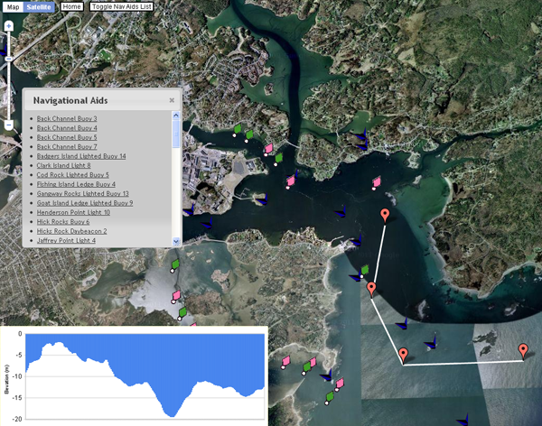
05.04.2011 06:16
Live HiSeasNet from SIO
Ernie Aaron posted a link to the SIO
HiSeasNet that is pretty cool! HiSeasNet:
Research Vessel Realtime Data: R/V Roger Revelle
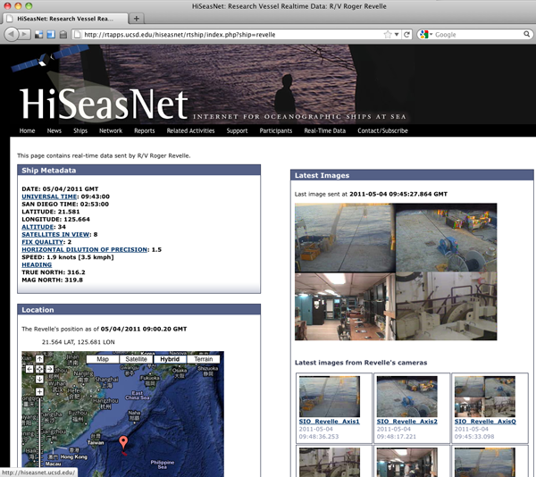
05.04.2011 06:00
MS Photosynth on the iPhone 3GS
While the results of MS Photosynth
from an iPhone 3GS (sorry, no 3G support) is not nearly as good as
what we do at JPL or NASA Ames with mosaics, it is pretty awesomely
handy and super easy. An excellent free phone app to have for any
field scientist. Who is going to be first to see what happens from
the deck of a ship (preferably underway in a harbor)? Should
produce some interesting artifacts 
Looks like exporting through facebook rips out the geotagging or there never was any geotagging for this image. I did answer that it was okay to use location info in the app.
Looks like exporting through facebook rips out the geotagging or there never was any geotagging for this image. I did answer that it was okay to use location info in the app.
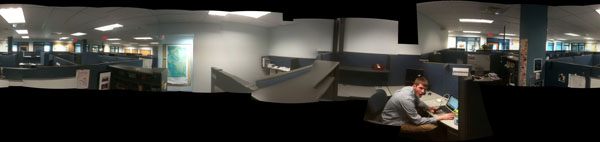
05.03.2011 11:15
UnderwaySV/CTD
We just had a presentation from the
Oceanscience Group's UnderwayCTD/SV (Conductivity, Temp,
Depth/Sound Velocity) team. They have automatic downloading of data
via BlueTooth to help speed up the process.
05.02.2011 09:26
AIS test datasets
I had a request from Tanya for some
AIS data that could be used in research. Here are 3 datasets that I
collected. I am releasing them for all to use.

AIS data sets by Kurt Schwehr are licensed under a Creative Commons Attribution 3.0 Unported License.
Based on a work at vislab-ccom.unh.edu.
AIS data sets
nhcml-2010.tar.bz2 - The Coastal Marine Lab at the UNH pier. This is a jpole antenna in a telecom closet. The reception should be pretty bad, but it does cover the harbor entrance. The receiver is an SR-162.
nhjel-2010.tar.bz2 - SR 162g with GPS and AIVDO NMEA messages. Located in the upper window of Jackson Estuarine Lab. It has a small whip antenna and is located far from the controlled channel, so AIS contacts are infrequent. It does have some ATON messages.
norfolk-va-2007.ais.bz2 - An SR 162 receiver and I can't remember which antenna. Located in the Sheraton Hotel, probably on the 8th floor. Just a short time period.
I hope these data sets can help people who want to check out AIS and don't have their own setup to log data or aren't located near a water way with AIS vessels.
One of the things that I have real trouble with for processing NAIS data is the lack of station metadata and I apologize that I am doing the same thing here.
AIS data sets by Kurt Schwehr are licensed under a Creative Commons Attribution 3.0 Unported License.
Based on a work at vislab-ccom.unh.edu.
AIS data sets
nhcml-2010.tar.bz2 - The Coastal Marine Lab at the UNH pier. This is a jpole antenna in a telecom closet. The reception should be pretty bad, but it does cover the harbor entrance. The receiver is an SR-162.
nhjel-2010.tar.bz2 - SR 162g with GPS and AIVDO NMEA messages. Located in the upper window of Jackson Estuarine Lab. It has a small whip antenna and is located far from the controlled channel, so AIS contacts are infrequent. It does have some ATON messages.
norfolk-va-2007.ais.bz2 - An SR 162 receiver and I can't remember which antenna. Located in the Sheraton Hotel, probably on the 8th floor. Just a short time period.
I hope these data sets can help people who want to check out AIS and don't have their own setup to log data or aren't located near a water way with AIS vessels.
One of the things that I have real trouble with for processing NAIS data is the lack of station metadata and I apologize that I am doing the same thing here.
05.01.2011 15:12
latex source to my ushydro paper
I've released the latex and bibtex
source to my US Hydro paper so that others can use the bibtex and
layout style should they choose and to provide an example for how I
organized the paper for those who are curious. While the text of
the paper and the figures are Attribution-NonCommercial-NoDerivs
3.0 Unported (CC BY-NC-ND 3.0), the formatting, makefile,
bibtex are up for use by anyone. If you want to use the figures or
some of the text and need permission, please just contact me.
2011-schwehr-ushydro-dwh.tar.bz2
2011-schwehr-ushydro-dwh.tar.bz2